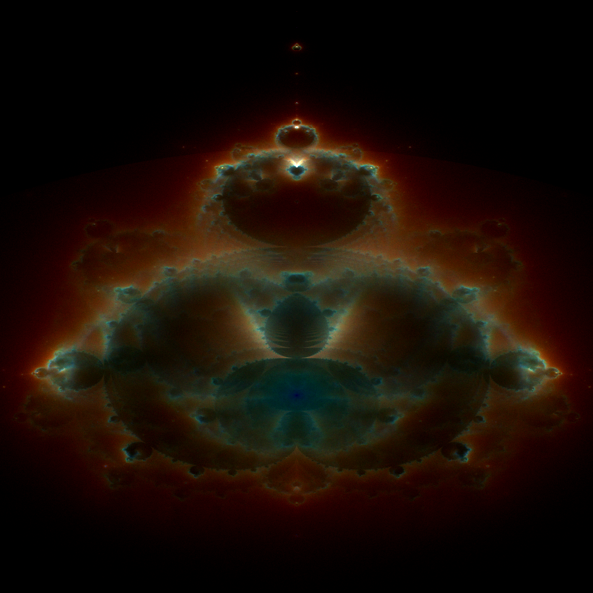

The Buddhabrot is a unique and captivating fractal, showcasing a remarkable blend of mathematical intricacy and natural beauty. It's not just a visual marvel; it represents a deep 4 dimensional mathematical concept rooted in complex numbers and iterative algorithms.
Unlike traditional Mandelbrot renderings that focus on the boundary of the set, the Buddhabrot reveals its structure by tracing the paths of points that escape. These paths, when accumulated and visualized, create a haunting image that bears an uncanny resemblance to a seated Buddha, enveloped in the celestial fabric of the cosmos.
Through various levels of iteration, the convergence of the Buddhabrot into its final form becomes evident. Currently, iterations ranging from 3 to 25, as well as the 'complete' version with 100 iterations, are available for purchase!
3 Iterations
4 Iterations
5 Iterations
6 Iterations
7 Iterations
8 Iterations
9 Iterations
10 Iterations
17 Iterations
26 Iterations
55 Iterations
100 Iterations
The beauty of the Buddhabrot lies not only in its complexity but also in its visual appeal. Its intricate patterns and symmetries resonate with our appreciation for aesthetics, bridging the gap between abstract mathematics and tangible art. This fractal has become a symbol of the fascinating interplay between order and chaos, serving as a source of inspiration for artists, mathematicians, and enthusiasts alike.
Exploring the Buddhabrot reveals the inherent beauty of mathematics. It provides a visual language for complex concepts, making them accessible and engaging. This fractal embodies the unity of science and art, demonstrating how mathematical structures can give rise to stunning visual masterpieces.